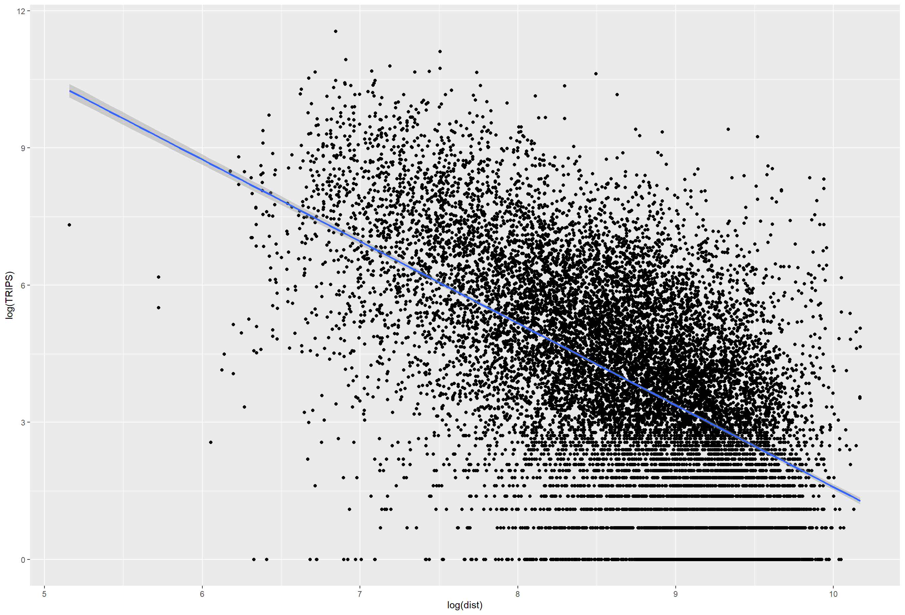

In-class Exercise 3: Calibrating Spatial Interaction Models with R
16.1 Overview
Spatial Interaction Models (SIMs) are mathematical models for estimating flows between spatial entities developed by Alan Wilson in the late 1960s and early 1970, with considerable uptake and refinement for transport modelling since then Boyce and Williams (2015).
There are four main types of traditional SIMs (Wilson 1971):
Unconstrained
Production-constrained
Attraction-constrained
Doubly-constrained
Ordinary least square (OLS), log-normal, Poisson and negative binomial (NB) regression methods have been used extensively to calibrate OD flow models by processing flow data as different types of dependent variables. In this chapter, you will gain hands-on experiences on using appropriate R packages to calibrate SIM by using there four regression methods.
16.2 The Case Study and Data
In this exercise, we are going to calibrate SIM to determine factors affecting the public bus passenger flows during the morning peak in Singapore.
16.3 Getting Started
For the purpose of this exercise, four R packages will be used. They are:
sf for importing, integrating, processing and transforming geospatial data.
sp package , although an older package, is more efficient for computation of large data.
tidyverse for importing, integrating, wrangling and visualising data.
tmap for creating thematic maps
ggpubr for some easy-to-use functions (like
ggarrange())for creating and customizing ‘ggplot2’- based publication ready plots.performance is part of the
easystatspackage for computing measures to assess model quality, which are not directly provided by R’s ‘base’ or ‘stats’ packages. The primary goal of the performance package is to provide utilities for computing indices of model quality and goodness of fit. These include measures like r-squared (R2), root mean squared error (RMSE)reshape2is an old tool from base R. It handles matrix well for our distance matrix, like pivoting function likemelt(). Tidyverse does not handle matrix very well.
16.4 The Data
This exercise is a continuation of Chapter 15: Processing and Visualising Flow Data and the following data will be used:
od_data.rds, weekday morning peak passenger flows at planning subzone level.
mpsz.rds, URA Master Plan 2019 Planning Subzone boundary in simple feature tibble data frame format.
Beside these two data sets, an additional attribute data file called pop.csv will be provided. It
16.5 Computing Distance Matrix
In spatial interaction, a distance matrix is a table that shows the distance between pairs of locations. For example, in the table below we can see an Euclidean distance of 3926.0025 between MESZ01 and RVSZ05, of 3939.1079 between MESZ01 and SRSZ01, and so on. By definition, an location’s distance from itself, which is shown in the main diagonal of the table, is 0.

In this section, you will learn how to compute a distance matrix by using URA Master Plan 2019 Planning Subzone boundary in which you saved as an rds file called mpsz.
First, let us import mpsz.rds into R environemnt by using the code chunk below.
Reading layer `MPSZ-2019' from data source
`C:\yixin-neo\ISSS624_AGA\In-class_Ex3\data\geospatial' using driver `ESRI Shapefile'
Simple feature collection with 332 features and 6 fields
Geometry type: MULTIPOLYGON
Dimension: XY
Bounding box: xmin: 103.6057 ymin: 1.158699 xmax: 104.0885 ymax: 1.470775
Geodetic CRS: WGS 84Simple feature collection with 332 features and 6 fields
Geometry type: MULTIPOLYGON
Dimension: XY
Bounding box: xmin: 2667.538 ymin: 15748.72 xmax: 56396.44 ymax: 50256.33
Projected CRS: SVY21 / Singapore TM
First 10 features:
SUBZONE_N SUBZONE_C PLN_AREA_N PLN_AREA_C REGION_N
1 MARINA EAST MESZ01 MARINA EAST ME CENTRAL REGION
2 INSTITUTION HILL RVSZ05 RIVER VALLEY RV CENTRAL REGION
3 ROBERTSON QUAY SRSZ01 SINGAPORE RIVER SR CENTRAL REGION
4 JURONG ISLAND AND BUKOM WISZ01 WESTERN ISLANDS WI WEST REGION
5 FORT CANNING MUSZ02 MUSEUM MU CENTRAL REGION
6 MARINA EAST (MP) MPSZ05 MARINE PARADE MP CENTRAL REGION
7 SUDONG WISZ03 WESTERN ISLANDS WI WEST REGION
8 SEMAKAU WISZ02 WESTERN ISLANDS WI WEST REGION
9 SOUTHERN GROUP SISZ02 SOUTHERN ISLANDS SI CENTRAL REGION
10 SENTOSA SISZ01 SOUTHERN ISLANDS SI CENTRAL REGION
REGION_C geometry
1 CR MULTIPOLYGON (((33222.98 29...
2 CR MULTIPOLYGON (((28481.45 30...
3 CR MULTIPOLYGON (((28087.34 30...
4 WR MULTIPOLYGON (((14557.7 304...
5 CR MULTIPOLYGON (((29542.53 31...
6 CR MULTIPOLYGON (((35279.55 30...
7 WR MULTIPOLYGON (((15772.59 21...
8 WR MULTIPOLYGON (((19843.41 21...
9 CR MULTIPOLYGON (((30870.53 22...
10 CR MULTIPOLYGON (((26879.04 26...Notice that it is a sf tibble dataframe object class.
16.5.1 Converting from sf data.table to SpatialPolygonsDataFrame
There are at least two ways to compute the required distance matrix. One is based on sf and the other is based on sp. Past experience shown that computing distance matrix by using sf function took relatively longer time that sp method especially the data set is large. In view of this, sp method is used in the code chunks below.
First as.Spatial() will be used to convert mpsz from sf tibble data frame to SpatialPolygonsDataFrame of sp object as shown in the code chunk below.
It has become a large spatialpolygendataframe (older). It contains a data table inside, but no geometry column (contain in another table). Wheras in new sf, everything is in a single table.
class : SpatialPolygonsDataFrame
features : 332
extent : 2667.538, 56396.44, 15748.72, 50256.33 (xmin, xmax, ymin, ymax)
crs : +proj=tmerc +lat_0=1.36666666666667 +lon_0=103.833333333333 +k=1 +x_0=28001.642 +y_0=38744.572 +ellps=WGS84 +towgs84=0,0,0,0,0,0,0 +units=m +no_defs
variables : 6
names : SUBZONE_N, SUBZONE_C, PLN_AREA_N, PLN_AREA_C, REGION_N, REGION_C
min values : ADMIRALTY, AMSZ01, ANG MO KIO, AM, CENTRAL REGION, CR
max values : YUNNAN, YSSZ09, YISHUN, YS, WEST REGION, WR Exploration: How to access a SpatialPolygonDataFrame object of the older sp package.
mpsz_sp['SUBZONE_N'][[1]]
mpsz_sp@data # class dataframe
mpsz_sp@polygons # class: list
mpsz_sp@polygons[[1]] # access the first polygon / subzone
mpsz_sp@polygons[[1]]@Polygons # access the slot in the polygon object that contains information about individual Polygons within the overall geometry
mpsz_sp@polygons[[1]]@Polygons[[1]] # same as above, enter another layer
mpsz_sp@polygons[[1]]@Polygons[[1]]@coords #get the coordinates of the first polygon / subzone
mpsz_sp@polygons[[332]]@Polygons[[1]]@coords #total of 333 subzones16.5.2 Computing the distance matrix
Next, spDists() of sp package will be used to compute the Euclidean distance between the centroids of the planning subzones.
spDists(x, y = x, longlat = FALSE, segments = FALSE, diagonal = FALSE)
spDists returns a full matrix of distances in the metric of the points if longlat=FALSE, or in kilometers if longlat=TRUE; it uses spDistsN1 in case points are two-dimensional. In case of spDists(x,x), it will compute all n x n distances, not the sufficient n x (n-1).
Arguments
x: A matrix of n-D points with row denoting points, first column x/longitude, second column y/latitude, or a Spatial object that has a coordinates method
y: A matrix of n-D points with row denoting points, first column x/longitude, second column y/latitude, or a Spatial object that has a coordinates method
longlat: logical; if FALSE (default), Euclidean distance, if TRUE Great Circle (WGS84 ellipsoid) distance; if x is a Spatial object, longlat should not be specified but will be derived from is.projected(x)
segments: logical; if TRUE, y must be missing; the vector of distances between consecutive points in x is returned.
diagonal: logical; if TRUE, y must be given and have the same number of points as x; the vector with distances between points with identical index is returned.
The diagonals of the ouput (332 by 332) are all 0. Distance with itself. The unit of distance is if ‘m’ (euclidean?) and km if WSG84?
[,1] [,2] [,3] [,4] [,5] [,6] [,7]
[1,] 0.000 3926.0025 3939.108 20252.964 2989.9839 1431.330 19211.836
[2,] 3926.003 0.0000 305.737 16513.865 951.8314 5254.066 16242.523
[3,] 3939.108 305.7370 0.000 16412.062 1045.9088 5299.849 16026.146
[4,] 20252.964 16513.8648 16412.062 0.000 17450.3044 21665.795 7229.017
[5,] 2989.984 951.8314 1045.909 17450.304 0.0000 4303.232 17020.916
[6,] 1431.330 5254.0664 5299.849 21665.795 4303.2323 0.000 20617.082
[7,] 19211.836 16242.5230 16026.146 7229.017 17020.9161 20617.082 0.000
[8,] 14960.942 12749.4101 12477.871 11284.279 13336.0421 16281.453 5606.082
[9,] 7515.256 7934.8082 7649.776 18427.503 7801.6163 8403.896 14810.930
[10,] 6391.342 4975.0021 4669.295 15469.566 5226.8731 7707.091 13111.391
[,8] [,9] [,10]
[1,] 14960.942 7515.256 6391.342
[2,] 12749.410 7934.808 4975.002
[3,] 12477.871 7649.776 4669.295
[4,] 11284.279 18427.503 15469.566
[5,] 13336.042 7801.616 5226.873
[6,] 16281.453 8403.896 7707.091
[7,] 5606.082 14810.930 13111.391
[8,] 0.000 9472.024 8575.490
[9,] 9472.024 0.000 3780.800
[10,] 8575.490 3780.800 0.000Notice that the output dist is a matrix object class of R. Also notice that the column heanders and row headers are not labeled with the planning subzone codes.
16.5.3 Labelling column and row heanders of a distance matrix
First, we will create a list sorted according to the the distance matrix by planning sub-zone code.
Next we will attach SUBZONE_C to row and column for distance matrix matching ahead
MESZ01 RVSZ05 SRSZ01 WISZ01 MUSZ02
MESZ01 0.000 3926.0025 3939.108 20252.96 2989.9839
RVSZ05 3926.003 0.0000 305.737 16513.86 951.8314
SRSZ01 3939.108 305.7370 0.000 16412.06 1045.9088
WISZ01 20252.964 16513.8648 16412.062 0.00 17450.3044
MUSZ02 2989.984 951.8314 1045.909 17450.30 0.000016.5.4 Pivoting distance value by SUBZONE_C
Next, we will pivot the distance matrix into a long table by using the row and column subzone codes as show in the code chunk below.
We will use the melt() function of the reshape2 package to convert wide-format data to long-format data. This function will convert wide-format data to a data frame with columns for each combination of row and column indices and their corresponding values.
To do the opposite, used cast().
Three new columns generated, (1) ‘var1’, (2) ‘var2’ and (3) ‘value’ containing the distance for the corresponding var1-var2 pair; thus rename to ‘dist’.
There are 110,224 rows in distPair due to 332P2 + 332 = 332*331 + 332. Number of possible permutations with replacement.
Var1 Var2 dist
1 MESZ01 MESZ01 0.000
2 RVSZ05 MESZ01 3926.003
3 SRSZ01 MESZ01 3939.108
4 WISZ01 MESZ01 20252.964
5 MUSZ02 MESZ01 2989.984
6 MPSZ05 MESZ01 1431.330
7 WISZ03 MESZ01 19211.836
8 WISZ02 MESZ01 14960.942
9 SISZ02 MESZ01 7515.256
10 SISZ01 MESZ01 6391.342Notice that the within zone distance is 0.
16.5.5 Updating intra-zonal distances
In this section, we are going to append a constant value to replace the intra-zonal distance of 0.
First, we will select and find out the minimum value of the distance by using summary().
Var1 Var2 dist
MESZ01 : 331 MESZ01 : 331 Min. : 173.8
RVSZ05 : 331 RVSZ05 : 331 1st Qu.: 7149.5
SRSZ01 : 331 SRSZ01 : 331 Median :11890.0
WISZ01 : 331 WISZ01 : 331 Mean :12229.4
MUSZ02 : 331 MUSZ02 : 331 3rd Qu.:16401.7
MPSZ05 : 331 MPSZ05 : 331 Max. :49894.4
(Other):107906 (Other):107906 After removing distance = 0 (intra), the minimum inter-zonal distance is 173.8m.
Next, a constant distance value of 50m (estimate based on 173.8m) is added into intra-zones distance. The diagonals of dist matrix (if still a matrix) would have been 50m.
The code chunk below will be used to check the result data.frame.
Var1 Var2 dist
MESZ01 : 332 MESZ01 : 332 Min. : 50
RVSZ05 : 332 RVSZ05 : 332 1st Qu.: 7097
SRSZ01 : 332 SRSZ01 : 332 Median :11864
WISZ01 : 332 WISZ01 : 332 Mean :12193
MUSZ02 : 332 MUSZ02 : 332 3rd Qu.:16388
MPSZ05 : 332 MPSZ05 : 332 Max. :49894
(Other):108232 (Other):108232 The code chunk below is used to rename the origin and destination fields.
Lastly, the code chunk below is used to save the dataframe for future use.
16.6 Preparing flow data
The code chunk below is used import od_data save in Chapter 15 into R environment.
There are 310 unique origin subzone values and 311 unique destin subzone values.
Next, we will compute the total passenger trip between and within planning subzones by using the code chunk below. The output is all flow_data.
flow_data <- od_data %>%
group_by(ORIGIN_SZ, DESTIN_SZ) %>%
summarize(TRIPS = sum(MORNING_PEAK))
head(flow_data, 10)# A tibble: 10 × 3
# Groups: ORIGIN_SZ [1]
ORIGIN_SZ DESTIN_SZ TRIPS
<chr> <chr> <dbl>
1 AMSZ01 AMSZ01 2575
2 AMSZ01 AMSZ02 11742
3 AMSZ01 AMSZ03 14886
4 AMSZ01 AMSZ04 3237
5 AMSZ01 AMSZ05 9349
6 AMSZ01 AMSZ06 2231
7 AMSZ01 AMSZ07 1714
8 AMSZ01 AMSZ08 2624
9 AMSZ01 AMSZ09 2371
10 AMSZ01 AMSZ10 18316.6.1 Separating intra-flow from passenger volume df
Code chunk below is used to add three new fields in flow_data dataframe.
Two new fields called ‘FlowNoIntra’ and ‘offset’ are created.
| ORIGIN_SZ | DESTIN_SZ | TRIPS | FlowNoIntra | offset |
|---|---|---|---|---|
| AMSZ01 | AMSZ01 | 2575 | 0 | 1e-06 |
| AMSZ01 | AMSZ02 | 11742 | 11742 | 1e+00 |
| AMSZ01 | AMSZ03 | 14886 | 14886 | 1e+00 |
Rows: 20,987
Columns: 5
Groups: ORIGIN_SZ [310]
$ ORIGIN_SZ <chr> "AMSZ01", "AMSZ01", "AMSZ01", "AMSZ01", "AMSZ01", "AMSZ01"…
$ DESTIN_SZ <chr> "AMSZ01", "AMSZ02", "AMSZ03", "AMSZ04", "AMSZ05", "AMSZ06"…
$ TRIPS <dbl> 2575, 11742, 14886, 3237, 9349, 2231, 1714, 2624, 2371, 18…
$ FlowNoIntra <dbl> 0, 11742, 14886, 3237, 9349, 2231, 1714, 2624, 2371, 183, …
$ offset <dbl> 1e-06, 1e+00, 1e+00, 1e+00, 1e+00, 1e+00, 1e+00, 1e+00, 1e…16.6.2 Combining passenger volume data with distance value
Before we can join flow_data and distPair, we need to convert data value type of ORIGIN_SZ and DESTIN_SZ fields of flow_data dataframe into factor data type.
Now, left_join() of dplyr will be used to flow_data dataframe and distPair dataframe. The output is called flow_data1.
Notes:
distPair is a df containing distances for all corresponding subzone pairs (including self, default to 50m). ‘var1’, ‘var2’, ‘dist’
flow_data is a df containing ‘origin_sz’, ‘destin_sb’ and ‘morning_peak’
We will now perform a left join with two sets join keys.
The output contains distance and total morning peak trips for each possible pairs of subzones (self included).
Before left join:
flow_data has 20,987 rows.
distPair has 110,224 rows (is the all possible pairs out of 332 subzones, order matters and with replacement.)
After join:
flow_data1 has 20,987 rows.
flow_data has no distance. flow_data1 has distance data.
flow_data1 <- flow_data %>%
left_join (distPair,
by = c("ORIGIN_SZ" = "orig",
"DESTIN_SZ" = "dest"))
glimpse(flow_data1)Rows: 20,987
Columns: 6
Groups: ORIGIN_SZ [310]
$ ORIGIN_SZ <fct> AMSZ01, AMSZ01, AMSZ01, AMSZ01, AMSZ01, AMSZ01, AMSZ01, AM…
$ DESTIN_SZ <fct> AMSZ01, AMSZ02, AMSZ03, AMSZ04, AMSZ05, AMSZ06, AMSZ07, AM…
$ TRIPS <dbl> 2575, 11742, 14886, 3237, 9349, 2231, 1714, 2624, 2371, 18…
$ FlowNoIntra <dbl> 0, 11742, 14886, 3237, 9349, 2231, 1714, 2624, 2371, 183, …
$ offset <dbl> 1e-06, 1e+00, 1e+00, 1e+00, 1e+00, 1e+00, 1e+00, 1e+00, 1e…
$ dist <dbl> 50.0000, 810.4491, 1360.9294, 840.4432, 1076.7916, 805.297…Print out
| ORIGIN_SZ | DESTIN_SZ | TRIPS | FlowNoIntra | offset | dist |
|---|---|---|---|---|---|
| AMSZ01 | AMSZ01 | 2575 | 0 | 1e-06 | 50.0000 |
| AMSZ01 | AMSZ02 | 11742 | 11742 | 1e+00 | 810.4491 |
| AMSZ01 | AMSZ03 | 14886 | 14886 | 1e+00 | 1360.9294 |
| AMSZ01 | AMSZ04 | 3237 | 3237 | 1e+00 | 840.4432 |
| AMSZ01 | AMSZ05 | 9349 | 9349 | 1e+00 | 1076.7916 |
| AMSZ01 | AMSZ06 | 2231 | 2231 | 1e+00 | 805.2979 |
16.7 Preparing Origin and Destination Attributes
16.7.1 Importing population data
‘pop.csv’ is a processed version of ‘respopagesextod2011to2020.csv’ .
The original dataset used here is the Singapore Residents by Planning Area / Subzone, Single Year of Age and Sex, June 2022 in csv format . This is an aspatial data file. It can be downloaded at Department of Statistics, Singapore, the specific link can be found here. Although it does not contain any coordinates values, but it’s ‘PA’ and ‘SZ’ fields can be used as unique identifiers to geocode to ‘PLAN_AREA_N’ and ‘SUBZONE_N’ of the MP14_SUBZONE_WEB_PL shapefile respectively.
# A tibble: 6 × 5
PA SZ AGE7_12 AGE13_24 AGE25_64
<chr> <chr> <dbl> <dbl> <dbl>
1 ANG MO KIO ANG MO KIO TOWN CENTRE 310 710 2780
2 ANG MO KIO CHENG SAN 1140 2770 15700
3 ANG MO KIO CHONG BOON 1010 2650 14240
4 ANG MO KIO KEBUN BAHRU 1050 2390 12460
5 ANG MO KIO SEMBAWANG HILLS 420 1120 3620
6 ANG MO KIO SHANGRI-LA 810 1920 9650Why is the data prepared in this way?
Age group 7-12: Feeder bus to send kids to school
Age group 13-24: Feeder bus for secondary / JC / ITE/ poly students to school.
Interesting observation: When we examine the flow map in Hands-on_Ex3, the top few flow movement by bus have their destinations at Republic Poly in woodlands, AMK central ITE along AMK ave 5 for instance.
16.7.2 Geospatial data wrangling
POP + MPSZ
Let us append the zone codes in mpsz df to the pop’s population data by age groups. We do not really need to geometry data.
pop has 332 rows
mpsz has 332 rows
After join: 984,656 rows
Column selected are ‘PA’, ‘SZ’, ‘AGE7-12’, ‘AGE13-24’, ‘AGE25_64’ from pop df and ‘SUBZONE_C’ from mpsz df.
pop <- pop %>%
left_join(mpsz,
by = c("PA" = "PLN_AREA_N",
"SZ" = "SUBZONE_N")) %>%
select(1:6) %>%
rename(SZ_NAME = SZ,
SZ = SUBZONE_C)
head(pop)# A tibble: 6 × 6
PA SZ_NAME AGE7_12 AGE13_24 AGE25_64 SZ
<chr> <chr> <dbl> <dbl> <dbl> <chr>
1 ANG MO KIO ANG MO KIO TOWN CENTRE 310 710 2780 AMSZ01
2 ANG MO KIO CHENG SAN 1140 2770 15700 AMSZ02
3 ANG MO KIO CHONG BOON 1010 2650 14240 AMSZ03
4 ANG MO KIO KEBUN BAHRU 1050 2390 12460 AMSZ06
5 ANG MO KIO SEMBAWANG HILLS 420 1120 3620 AMSZ07
6 ANG MO KIO SHANGRI-LA 810 1920 9650 AMSZ0516.7.3 Preparing origin attribute
FLOW_DATA1 + POP
We would like to append the origin’s population data from pop to flow_data1 that contains(1) origin -destination pair, (2) actual flows and (3) distance information.
Morning peak: the push factor should be the population from origin population distribution.
Evening peak : the pull factor would be the population too.
Limits of our model: transfer trips not accounted for.
16.7.4 Preparing destination attribute
Similarly, we want to get the destination’s population data by destination from pop. Once again, perform a left join.
We will called the output data file SIM_data. it is in rds data file format.
16.8 Calibrating Spatial Interaction Models
In this section, you will learn how to calibrate Spatial Interaction Models by using Poisson Regression method.
16.8.1 Importing the modelling data
Firstly, let us import the modelling data by using the code chunk below.
16.8.2 Visualising the dependent variable
Firstly, let us plot the distribution of the dependent variable (i.e. TRIPS) by using histogram method by using the code chunk below.
Notice that the distribution is highly skewed and not resemble bell shape or also known as normal distribution.
Next, let us visualise the relation between the dependent variable and one of the key independent variable in Spatial Interaction Model, namely distance.
Notice that their relationship hardly resemble linear relationship.
On the other hand, if we plot the scatter plot by using the log transformed version of both variables, we can see that their relationship is more resemble linear relationship.
ggplot(data = SIM_data,
aes(x = log(dist),
y = log(TRIPS))) +
geom_point() +
geom_smooth(method = lm)
We have come to the end of our data preparation stage.
16.8.3 Checking for variables with zero values
Feature engineering state starts here: We need to make our data able to work for our chosen algorithm (Poisson regression).
Since Poisson Regression is based of log and log 0 is undefined, it is important for us to ensure that no 0 values in the explanatory variables.
In the code chunk below, summary() of Base R is used to compute the summary statistics of all variables in SIM_data data frame.
16.8.4 Unconstrained Spatial Interaction Model
In this section, we will learn how to calibrate an unconstrained spatial interaction model by using glm() of Base Stats. The explanatory variables are origin population by different age cohort, destination population by different age cohort (i.e. ORIGIN_AGE25_64) and distance between origin and destination in km (i.e. dist).
The general formula of Unconstrained Spatial Interaction Model

The code chunk used to calibrate to model is shown below:
The parameter estimate for distnace is -1.517. If the sign is positive, double-check our workings.
AIC: GLM by default do not provide R-square, only provide AIC.
Compare models:
Doubly constrained: best model as not dispersed. 60% accuracy because we only have one/two variables if we add more variables like job opportunities.
Summaries
OD matrix is often incomplete. Imagine trying to complete the OD matrix, it would involve us doing spatial interaction or OD surveys to find the missing values. There are 332 subzones in Singapore, and each survey is expensive,. In addition, OD matrix is constantly changing as flow patterns changes. We are trying to predict flows between origins and destinations. Flow could be thought of a function of (1) attribute of origin (propulsiveness) (2) attribute of destination (attractiveness) and (3) cost friction (like distance or transport cost or public transport stops). Assumption is that the benefits must outweigh the cost in order for flow to happen.
Gravity model takes into consideration the interaction between all origin and destination locations.
Potential model takes in consideration the interaction between a location and all other location pairs. (Good for measuring accessibility)
Retail model is commonly used by franchise like KFC / Pizza Hut to determine their area/region of service (aka delivery zones) for each outlet.
There are 4 variations in the Gravity model:
- Unconstrained: only the overall outflow is fixed and total outflow from origins = total inflow to destinations
- Origin constrained: outflow by origin is fixed.
- Destination constrained: inflow by destination is fixed.
- Doubly constrained: outflow by origin and inflow by destination is fixed.
To calculate flow from each origin to each destination, we need parameters like k, alpha, lambda and beta. The beta for distance is usually negative because we assume that there is an inverse relationship between interaction and distance, like Newtonian physics and laws of gravity.